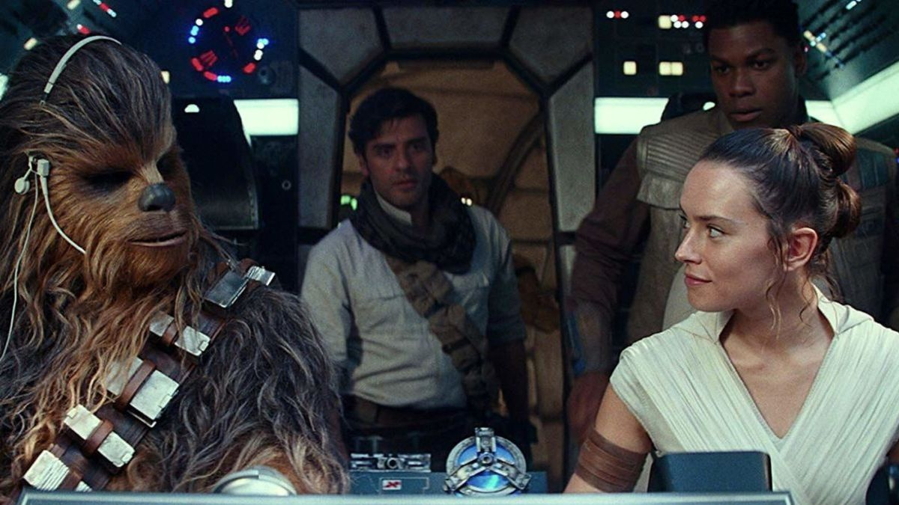

Featured article

The Dark Side of the Force
The Dark Side of the Force is a fictional series created by
George Lucas, which began as a sequel to Star Wars: Episode IV:
A New Hope. The series follows the adventures of Jedi Knights,
who are split between the Republic and the Galactic Empire.